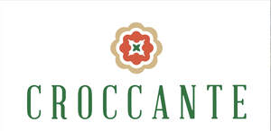
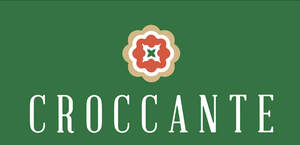

Trade Mark Journal No.2025/024 13 June 2025
UK00004211212 29 May 2025 (30,43)
Mark 1

Mark 2

- Class 30
- Pizza; Pizza pies; Pizza crusts; Pizza crust; Pizzas; Pizza sauce; Pizza dough; Pizza sauces; Gluten-free pizza; Frozen pizza; Pizza flour; Frozen pizza crusts; Fresh pizza; Pizza spices; Pizza bases; Pizza mixes; Frozen pizza crusts made of cauliflower; Uncooked pizzas; Pizza dough mix; Frozen pizzas; Sauces for pizzas; Chilled pizzas; Pre-baked pizzas crusts; Prepared pizza meals; Fresh pizzas; Calzones; Hamburger sandwiches; Lasagna; Cheeseburgers [sandwiches]; Pizzas [prepared]; Pasta for incorporating into pizzas; Breadsticks; Preserved pizzas; Pasta salad; Pasta; Pie crusts; Toasted cheese sandwich; Kebab sauce; Chicken sandwiches; Pasta sauce; Chicken pies; Truffle pasta; Sandwiches; Sandwich wraps [bread]; Frankfurter sandwiches; Sushi; Meat pies; Pies (Meat -); Taco sauce; Toasted cheese sandwich with ham; Prepared meals in the form of pizzas; Preparations for making pizza bases; Hamburgers in buns; Soda bread; Cream pies; Chocolate for toppings; Pasta sauces; Sauces for use with pasta; Sauces for pasta; Sopapillas [fried bread]; Ice cream sandwiches; Hamburgers contained in bread buns; Pies; Lasagne; Hamburgers being cooked and contained in a bread roll; Naan bread; Taco chips; Spaghetti and meatballs; Spaghetti with meatballs; Macaroni salad; Hamburgers contained in bread rolls; Hot dog sandwiches; Wholemeal pasta; Pasta dishes; Burgers contained in bread rolls; Hot sausage and ketchup in cut open bread rolls; Stuffed pasta; Pita bread; Sandwiches containing hamburgers; Turkey sandwiches; Cheese sauce; Ravioli; Burritos; Fish sandwiches; Vegetable pies; Macaroni with cheese; Macaroni cheese; Pesto [sauce]; Frozen brownie dough; Gluten-free bread; Fried dough cookies; Ziti; Toasted sandwiches; Salad cream; Ice-cream cakes; Fresh pasta; Spaghetti sauce; Pork pies; Canned spaghetti in tomato sauce; Pasta for soups; Frozen biscotti dough.
- Class 43
- Take away food services; Take away food and drink services; Fast-food restaurant services; Take-out restaurant services; Bar and restaurant services; Restaurant and bar services; Take-away restaurant services; Carvery restaurant services; Restaurant services; Salad bars [restaurant services]; Restaurant reservation services; Restaurants; Carry-out restaurants; Self-service restaurant services; Mobile restaurant services; Grill restaurants; Reservation of restaurants; Booking of restaurant seats; Serving food and drink for guests in restaurants; Catering in fast-food cafeterias; Serving food and drink in restaurants and bars; Restaurants (Self-service -); Self-service restaurants; Restaurant services for the provision of fast food; Tourist restaurants; Bistro services; Restaurant services incorporating licensed bar facilities; Fast food restaurants; Delicatessens [restaurants]; Providing food and drink for guests in restaurants; Provision of food and drink in restaurants; Providing restaurant services; Eateries; Restaurant information services; Providing food and drink in restaurants and bars; Restaurant services provided by hotels; Catering of food and drinks; Food and drink catering for banquets; Food and drink catering; Catering of food and drink; Catering (Food and drink -); Serving food and drink in doughnut shops; Reservation and booking services for restaurants and meals; Cafe services; Food and drink catering for institutions; Providing food and drink in bistros; Takeaway food and drink services; Serving food and drink in Internet cafes; Take-away food and drink services; Food and drink catering for cocktail parties; Takeaway food services; Take-away food services; Serving food and drink for guests; Making reservations and bookings for restaurants and meals; Serving food and drinks; Catering services for company cafeterias; Providing food and drink in doughnut shops; Café services; Catering for the provision of food and drink; Take-away fast food services; Hospitality services [food and drink]; Wine bar services; Providing food and drink catering services for exhibition facilities; Catering for the provision of food and beverages; Catering services for providing European-style cuisine; Beer bar services; Snack bar services; Consultancy services in the field of food and drink catering; Catering services for the provision of food and drink; Pizza parlors; Providing food and drink catering services for convention facilities; Providing food and drink catering services for fair and exhibition facilities; Providing food and drink for guests; Self-service cafeteria services.
VIVICR LTD